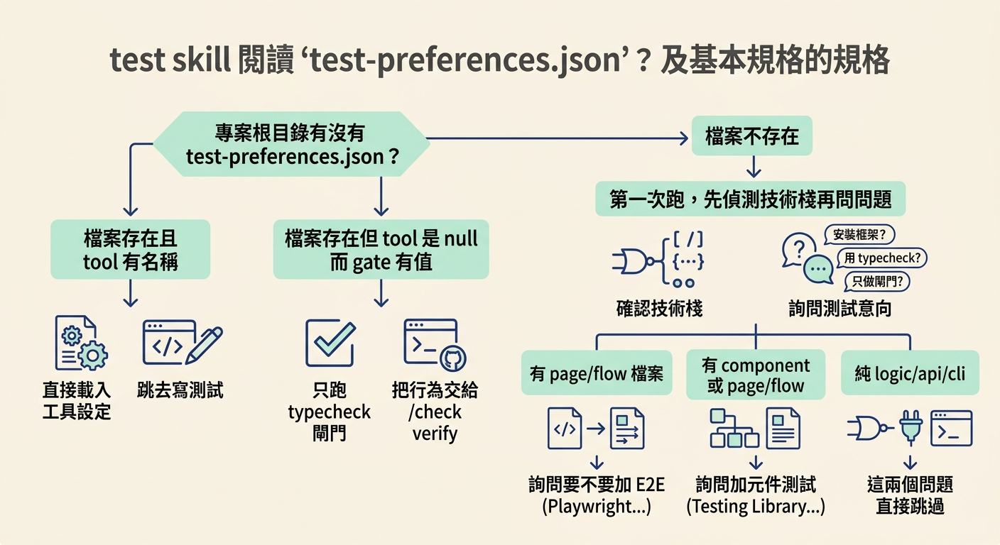
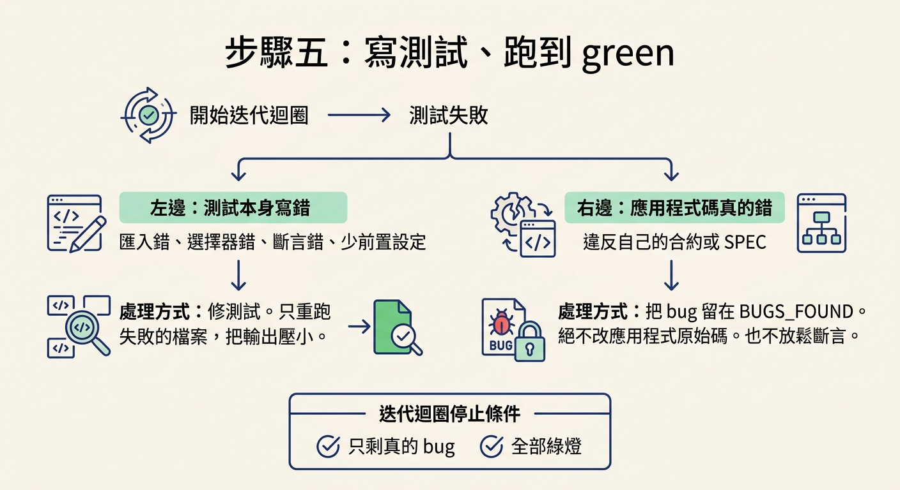
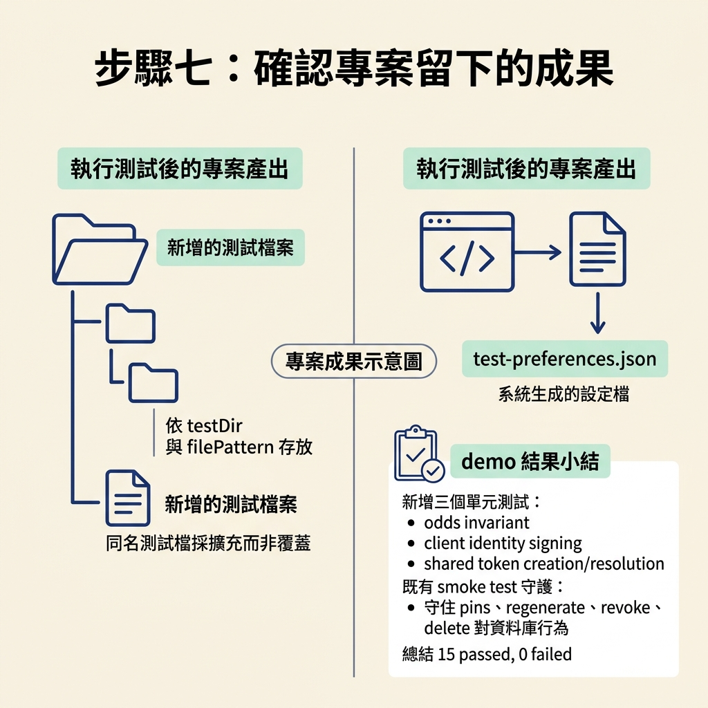

跑 test 或 test <feature>，把未測的資料邏輯補成單元／整合測試並跑到 green，留下 test-preferences.json。
上一節把 test 掃什麼、怎麼分類看懂之後，這一節要真的把它跑起來。做完之後，專案裡會多出針對這次變更的測試檔、一份 test-preferences.json，而且測試套件是綠的。從此以後，每次改動都有東西會第一時間告訴你：有沒有踩壞舊行為。
動手前先確認幾件事。第一，這條 branch 上有還沒 commit 的原始檔變更（如果沒有，它會走另一條路問你要改測什麼）。第二，check verify 已經先跑過——順序是 verify 先、test 後。第三，如果這是專案第一次跑 test，要有心理準備回答幾個技術棧的問題。
test，讓它先定範圍你可以直接跑 test，也可以帶上目標。先看不帶參數的版本會發生什麼事：
/test
不帶參數時，它會掃過所有檔案，先判斷現有測試套件有多完整、甚至存不存在。demo 裡它算出四十個檔案——對一次測試來說太多了，於是它停下來問你該怎麼聚焦：先測 logic 與 API、分批全部測完，或由你指定範圍。多數時候大家會走「指定」這條路，因為範圍小、回饋快。
接著用指令列上的目標鎖定範圍，例如 demo 裡的 test data model：
/test <feature>
它會辨識出這個功能裡值得寫測試的資料邏輯。demo 裡列出來的有 assign next pin number、compute unread pins 等等。注意它問你的是「範圍」，不是「要哪一種測試」——要哪種測試，是它依上一節那張分類表自己決定的。
它會先看專案根目錄有沒有 test-preferences.json，再依 tool 欄位分三條路走：
tool 有工具名稱：直接載入工具、testDir、filePattern、packageManager，跳去寫測試。tool 是 null、gate 有值：這是一個刻意不裝 runner 的專案。它只跑 typecheck／lint 閘門，然後停下來，把行為交給 /check verify，不會硬塞一套框架。第一次跑的問題有幾個重點。首先，如果整個專案完全沒有測試設定，它不會自作主張幫你裝一套，而是先確認你的打算：要裝一套測試框架、用 typecheck + /check verify 當閘門，還是只做 typecheck。決定要裝框架後，才問你要用哪一套——JS／TS 常見的預設是 Vitest，但已經安裝的工具會被優先列出。再來，只有當變更裡出現 page/flow 檔案時，它才會問要不要加 E2E（例如 Playwright）；只有當變更裡有 component 或 page/flow 檔案時，才會問要不要加元件測試支援（例如 Testing Library）。範圍只有 logic／api／cli 時，這兩個問題直接跳過。問完它會把選擇寫進 test-preferences.json，並告訴你：之後的 /test 會直接讀這份，跳過設定。

每一輪它都會問你同一件事，而且不幫你預設：測試寫完之後，要不要順手跑起來、修到綠？你可以選「跑並修到綠」，也可以選「只寫，給我手動指令」。這是一個每次都要重新回答的選擇，不會被存進偏好檔。
如果選了「跑並修到綠」，它會用專案自己的指令執行，demo 裡跑的就是：
pnpm test
接著進入迭代迴圈。這裡有兩條要分清楚的規則。第一，測試失敗如果是因為「測試本身寫錯」——匯入錯、選擇器錯、斷言錯、少了前置設定——就修測試，而且只重跑那個失敗的檔案，把輸出壓小。第二，測試失敗如果是因為「應用程式碼真的錯」——它違反了自己的合約或 spec——那就是測試在盡本分。這時候不要為了讓它變綠而去改應用程式的原始碼，也不要把斷言放鬆；把它留在 BUGS_FOUND 裡，繼續往下走。迴圈停下的條件是：只剩真的 bug，或全部綠燈。

寫完之後，報告的形狀大致固定，領頭是這個功能的總結果，接著才是測試檔清單與需要你注意的地方。bug 有的話會放在最前面，因為那是真的發現：
## /test <feature> · <all N passed | Y failed | not run> **Wrote <N> tests across <M> files (happy path / edges / errors / a11y). <X passed, Y failed via `<RUN_COMMAND>` | not run>.** Next (this feature's next unticked box in the scope): all pass → `/check review` if a `Review it` box remains, else `/sync` or the next feature · Y failed → fix them, or `/debug <feature>` if the code is wrong · not run → `<RUN_COMMAND>` Heads up: <bugs the tests caught · file:line + the failing expectation> · <uncovered AC-N or area, why>
讀的時候先看總結果那一行：幾個測試、幾個檔案、通過幾個、失敗幾個，還有用的指令是什麼。然後看 Heads up：如果有 bug 被測試抓到，會在這裡列出來，附上 file:line 與失敗的斷言；如果有沒覆蓋到的 AC-N 或區域，也會寫明原因。
跑完之後，專案會多出兩樣東西。第一是測試檔，依 testDir 與 filePattern 放好；如果同名的測試檔已經存在，它會用擴充的方式把你原本的測試留著，不會另建一個平行檔案，也不會覆蓋手寫的測試。第二是 test-preferences.json，讓之後的每一輪都能直接開始寫。
demo 裡的結果可以當作範例：它替 data model 產出三個新的單元測試，針對還沒被測到的資料邏輯——odds invariant、client identity signing，以及 shared token creation／resolution；既有的 smoke test 已經守住 pins、regenerate、revoke、delete 對資料庫的行為；最後跑出 15 passed, 0 failed。

如果這個功能在 scope 上，而且測試通過，它會問你要不要把這個功能的 Test it 打勾、並把 spec 的狀態推進 Accepted。要不要標成 done 由你決定，它不會拿這個當閘門。反過來，如果測試失敗或覆蓋不完整，Test it 就留著不打勾，並把狀況回報給你。
跑test的順序是：先讓它從 git 工作區定出範圍（檔案太多時先選聚焦策略）、用test <feature>鎖定目標、讀test-preferences.json（第一次會問技術棧並存檔，以及問要不要跑）、依檔案類型寫測試、用專案指令跑到綠、輸出總結果與Heads up，最後在專案裡留下測試檔與偏好檔。兩條要記住的原則：測試因真實 bug 失敗時，不要動應用程式的原始碼、也不要放鬆斷言；它不會替還在變的 scaffolding 上鎖。
走到這裡，兩種證明你都實際跑過一遍了：check verify 負責證明功能今天能跑，test 負責把它變成之後還會被守住的回歸保護。下一步就是把這條功能真的交出去——那個流程留給後面的單元。